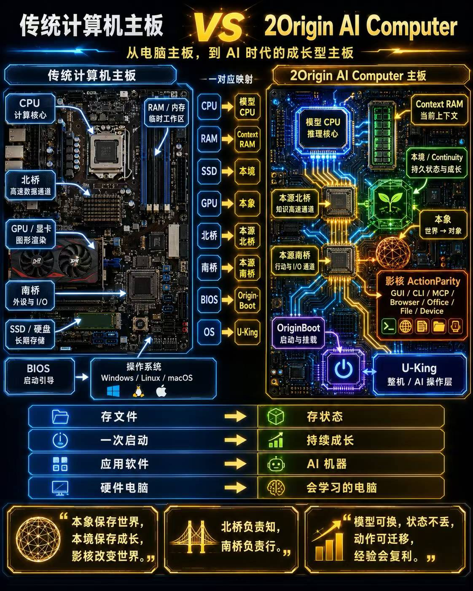

CPU / RAM
推理，与当前思考
模型像可替换的 CPU，Context 像临时内存。任务的持久状态需要保存在上下文之外，才能在下一次工作时重新装载。
2Origin · 本源 AI 计算机 · 研究原型
从电脑主板，到 AI 时代的成长型主板：模型负责推理，Context 承载当前思考，持久状态、南北桥与动作系统把它们连接起来。模型可换，状态不丢，动作可迁移，经验会复利。这是本源 AI 计算机的架构方向。
进展记录：2026-09-09 · 本地验证阶段 · 本页为案例说明，不是在线运行控制台
CPU 很重要，但 CPU 本身不是一台电脑。模型也一样：还需要记住工作的状态、连接工具、执行动作，并检查结果。这张原始架构图，就是理解本源 AI 计算机的入口。

模型像可替换的 CPU，Context 像临时内存。任务的持久状态需要保存在上下文之外，才能在下一次工作时重新装载。
北桥把任务与对象状态送入当前上下文；南桥连接实际动作。一次动作执行完，还要观察结果，而不能只相信一句“成功了”。
本象保存对象、约束与依据；影核提供动作入口。Origin Trace 把它们连接成可以回放、核对和做回归的执行记录。
原图中的“本境／成长”沿用早期命名。后续规范把“本境”明确为机器环境，把持久任务状态与记录归入“学籍”，把经验验证归入“学堂”。原图的整机比喻保留，具体分工以当前规范为准。“持续成长”指状态与经验证经验的积累，不表示在线训练了模型。
同一个 2Origin，对应两个层次：本象协议解决对象如何保存、校验与追溯；本源 AI 计算机把模型、任务状态、执行动作和验收过程连接起来。
AI 提交候选变更，确定性编译器检查约束。通过后才更新对象；拒绝的候选不会成为被接受的状态。
连接不同 AI 宿主、任务与动作入口，组织协作和复核。模型输出意见，运行核心负责落实状态变化。
同一记录保存调用、前后状态、实际差异、审批与断言结果，供时间轴展示、离线回放和回归验收使用。
这里记录实际执行过的工作，也明确每项结果能证明到哪里。原始运行证据尚未提供公开下载，不把内部验证写成第三方可独立复现。
任务：围绕两项已有回归失败，整理代码证据、提出待验证假设，生成诊断报告。
Hermes 整理 → Codex 诊断 → DSH 复核
结果：顺序交接真实输出，形成带引用的报告；执行事件驱动本地时间轴与回放。
边界：报告验收不等于 Bug 已修复；三个宿主的实际模型身份未可靠观测，不宣称是三个不同模型。
任务：复用诊断报告，验证是否可以把它登记为已验收结果。
虚假修复声明：REJECT · 合规报告提案：COMMIT
结果：本象编译器拦截虚假修复声明与陈旧状态 head；合法提案写入后回读验证，拒绝时状态保持不变。
边界：故意注入错误进行验证；本例是本地编译器执行，没有再次调用模型。
任务：在验证完成、世界写入尚未开始时终止运行进程，由后继 worker 接管。
保存检查点 → 终止原进程 → 接管复核 → 单次提交
结果：另一进程完成提交；并发接力只产生一次 COMMIT，重复恢复不重写 Trace 或世界状态。
边界：仅验证本机运行进程接力，未证明模型内部上下文续接。写入途中中断会要求核对，不自动重试。